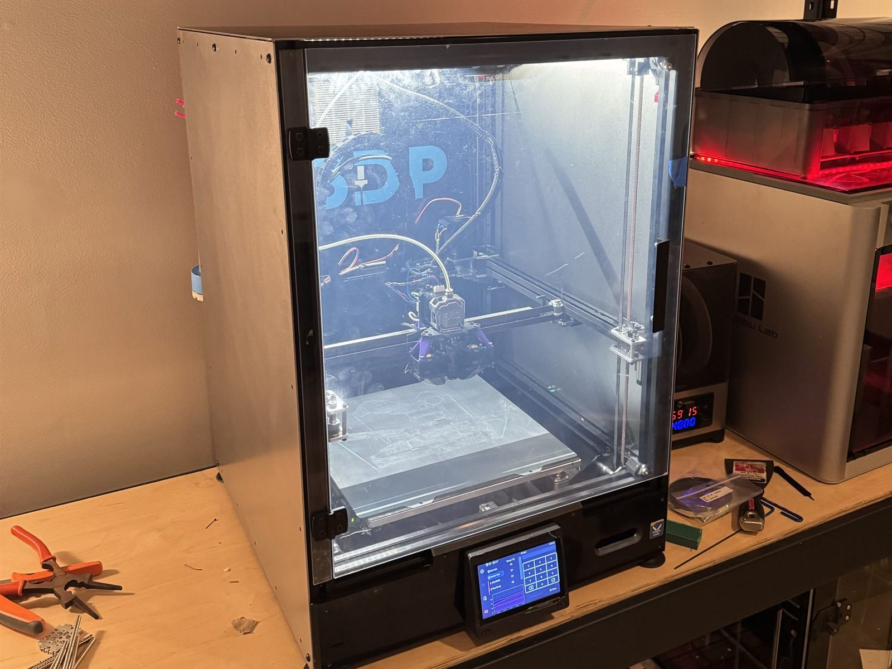
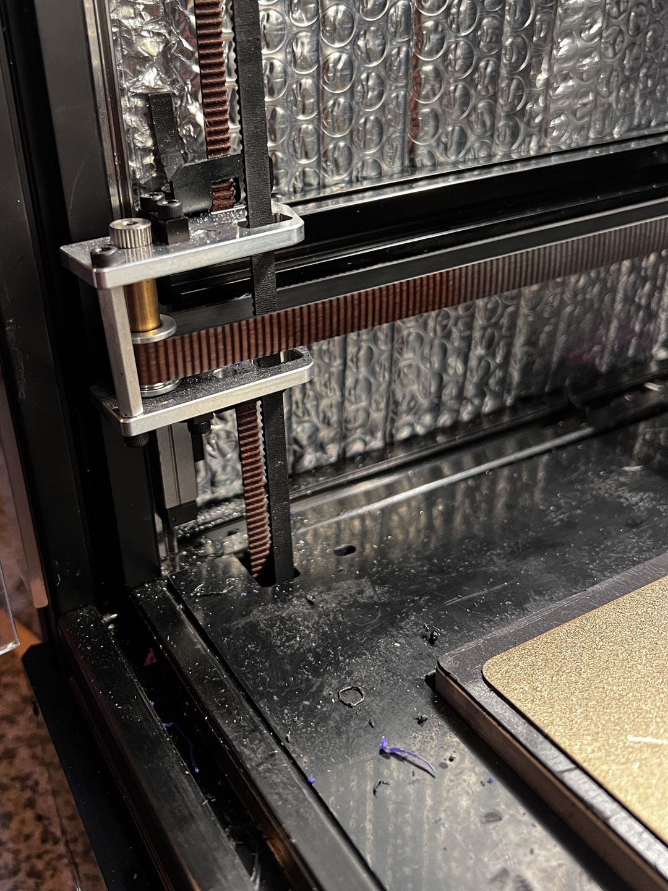
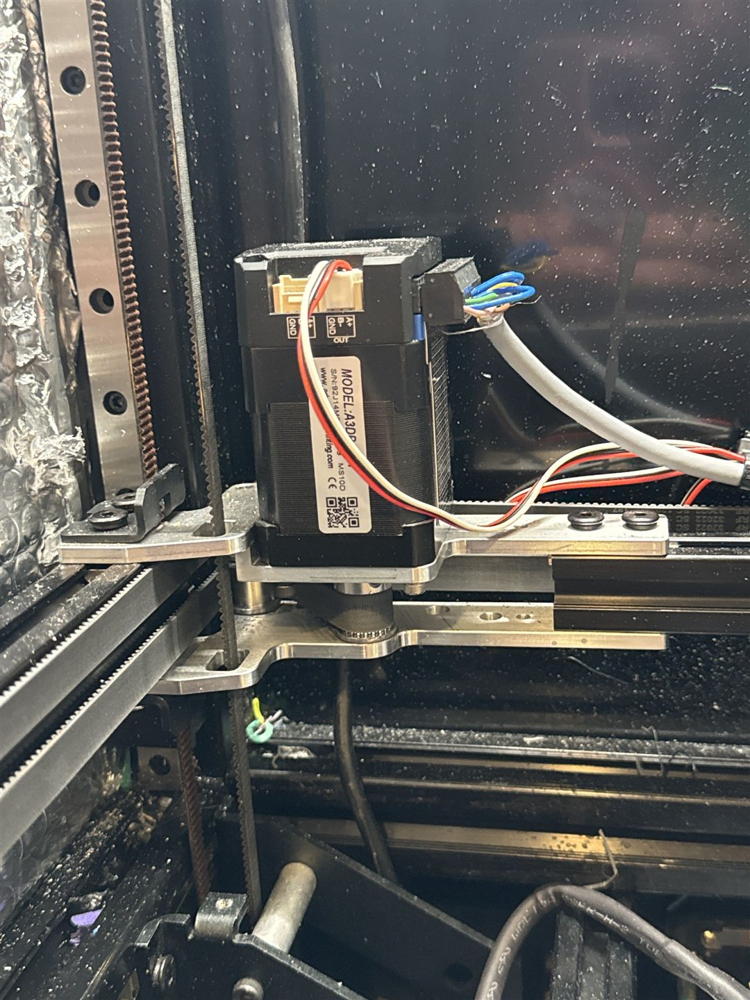
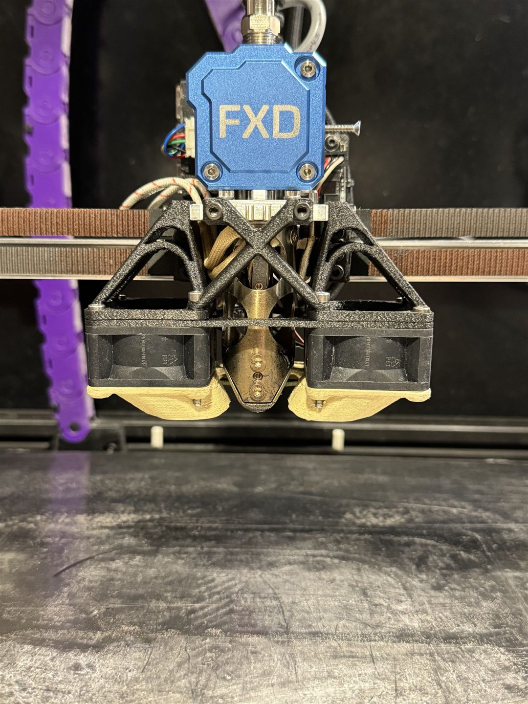
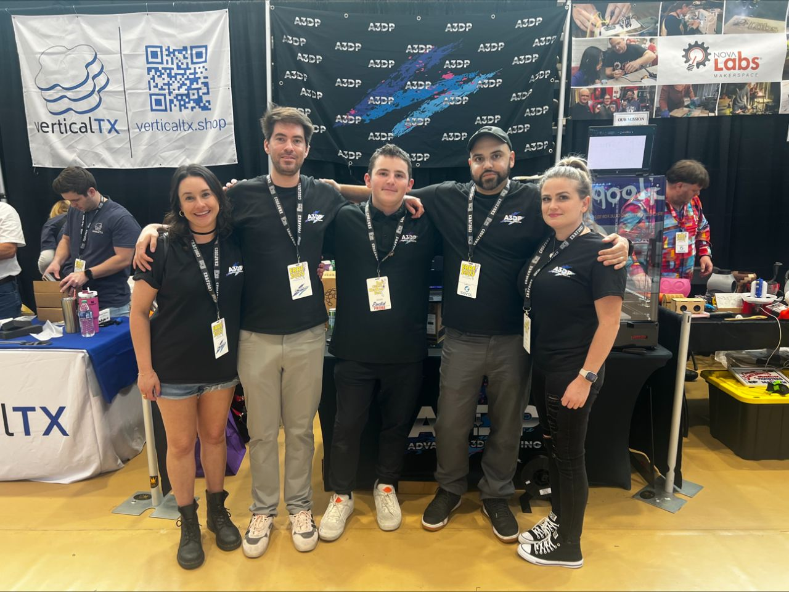
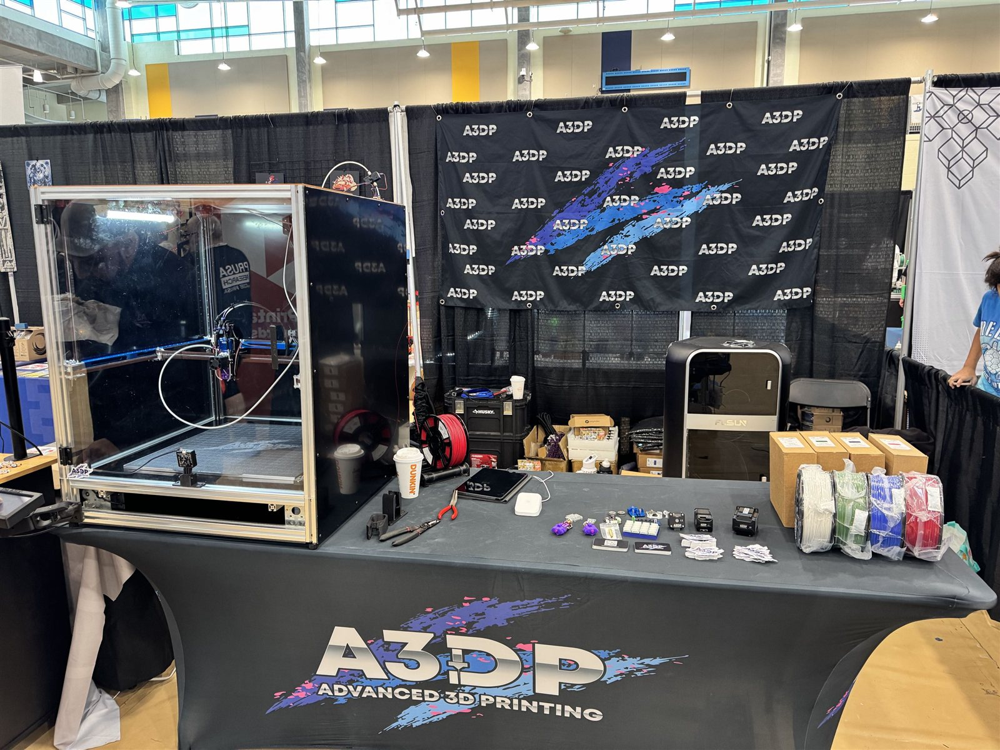
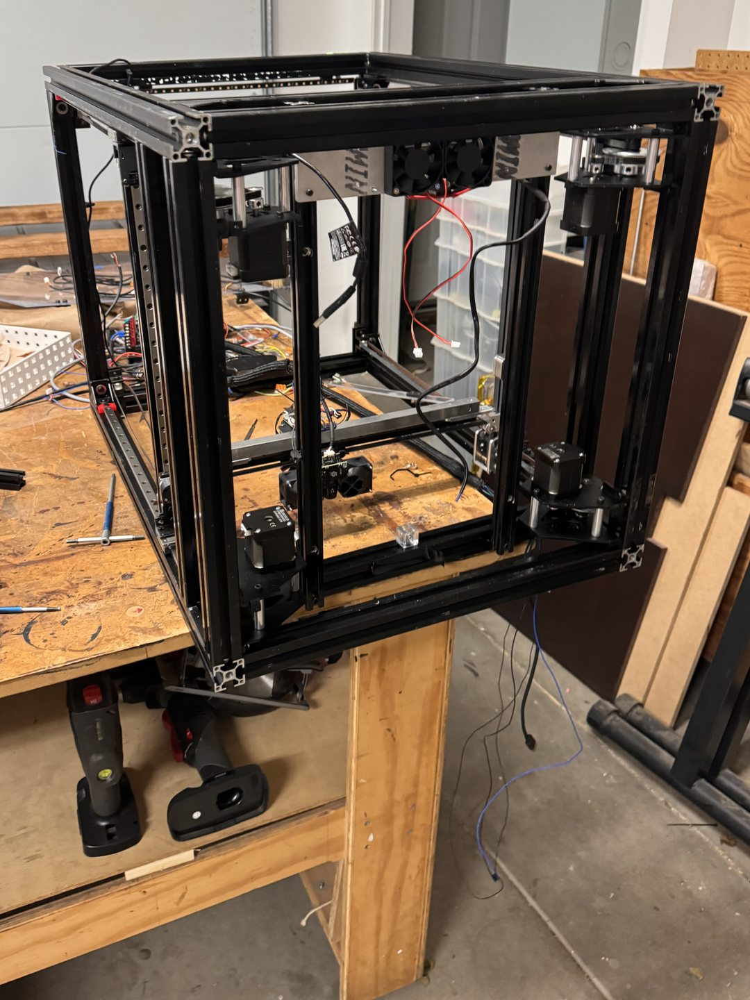
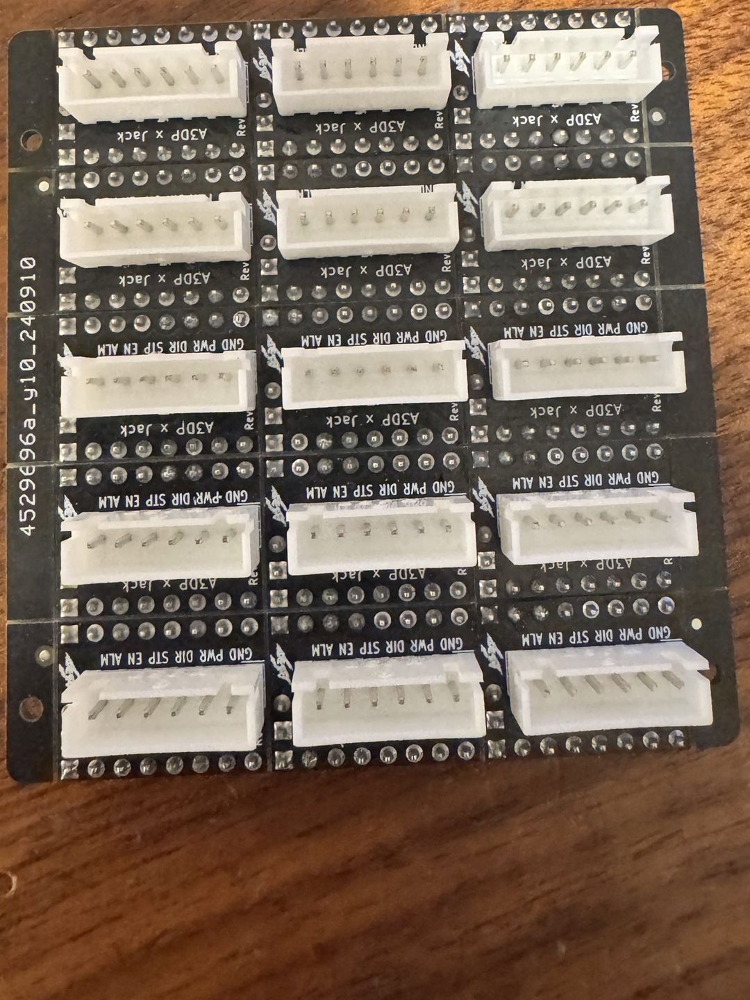

Custom Troodon 3D Printer
A 300 × 300 × 400 mm printer that started out as a stock Vivedino Troodon. It's had so many upgrades since that there isn't much stock left.

- Build volume
- 300 × 300 × 400 mm
- Top speed
- 3 m/s on XY
- Chamber
- Heated to 100°C
- Firmware
- Klipper, CAN bus
How it got here
It started as a Vivedino Troodon. Since then I've upgraded pretty much every part of it, one thing at a time, until it turned into its own machine. It's an A3DP build, from Advanced 3D Printing, where I worked as a PCB designer.
Almost all metal
Most of the gantry is custom metal, with very few 3D-printed parts. Printed parts flex, especially in a chamber sitting at 100°C. Metal keeps the whole thing stiff and flat, and that matters a lot when it's moving at 3 meters a second.



How fast
This is from back in 2023. At the time it was faster than about 95% of printers out there, which was really rare for a printer this big. The one in the video is the larger 400 × 400 × 500 mm version.
What's on it
- Servos on XYFull servo motors on the XY gantry in place of steppers. That's what lets it move at up to 3 meters a second.
- GantryA CNC gantry running 10 mm belts, built to be as light and efficient as possible. Less mass to throw around is what makes those speeds usable.
- HotendChube Conduction hotend.
- ExtruderA3DP custom FXD extruder.
- ChamberChamber heaters that get it up to 100°C, so it can handle high-temp materials.
- ElectronicsKlipper firmware, with CAN bus everywhere, so far fewer wires have to run back to the main board.
- Electronics bayA custom enclosure on the outside of the printer for the electronics, so they aren't sitting in a 100°C chamber.
- Air filtrationA custom filter on top with sensors that read VOCs and other air quality numbers, so I know the air around it is actually healthy.
On the convention floor
A3DP flew me out to showcase the printer and my boards at three conventions: ERRF, RMRRF and 3D Printopia. I spent the days at our booth walking people through the builds and explaining what the boards were for.
I sold my boards right there at the table, along with the rest of what A3DP makes, like our extruders and other parts. A lot of people walked up with a custom printer project and a specific problem, so I'd work through it with them on the spot and put together a combination of parts that fit their build.


The rebuild
Right now it's stripped back down to the bare frame so I can rebuild everything.

Custom PCBs
Servos normally take a lot more wiring than steppers. I designed a small adapter board in KiCad that makes them plug-and-play with any standard 3D printer mainboard that uses TMC stepper drivers. Each one breaks out ground, power, direction, step, enable and alarm on a single connector, so a servo driver plugs straight in.
I had them made, and now I sell them.

Tech stack
- Motion
- Servos10 mm beltsCNC gantry
- Hot parts
- Chube ConductionA3DP FXD extruder100°C chamber
- Electronics
- KlipperCAN busCustom PCBsKiCadVOC sensing
The full model
This is the whole printer in Fusion. Drag to spin it around, scroll to zoom, and click into parts to see how it all goes together.